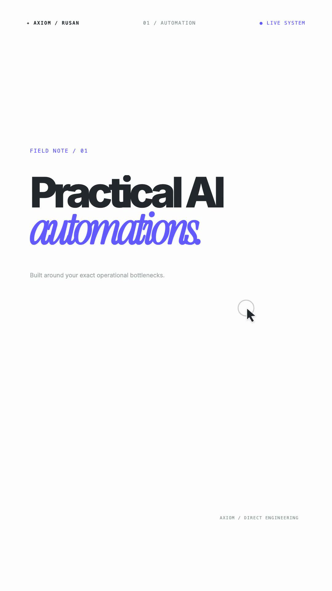
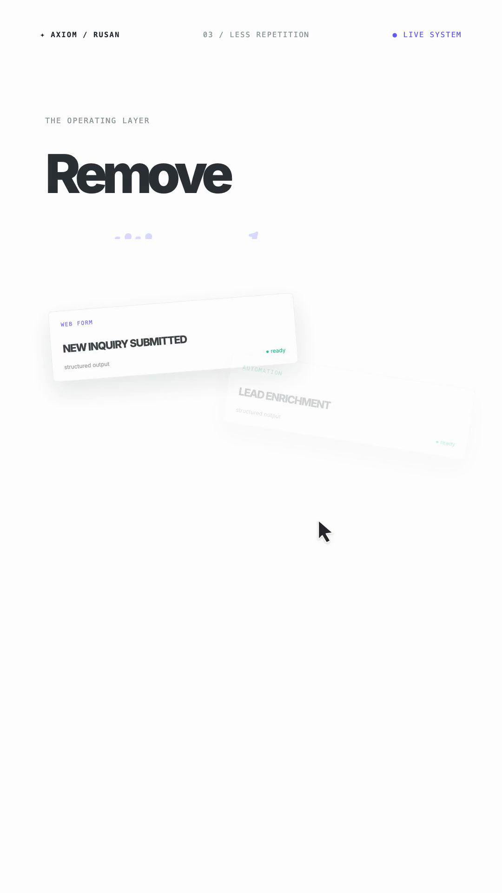
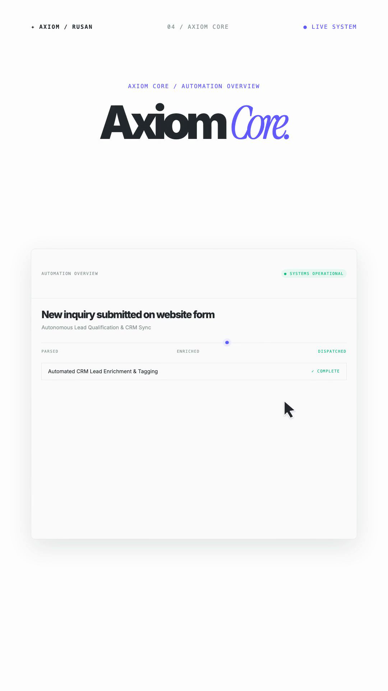
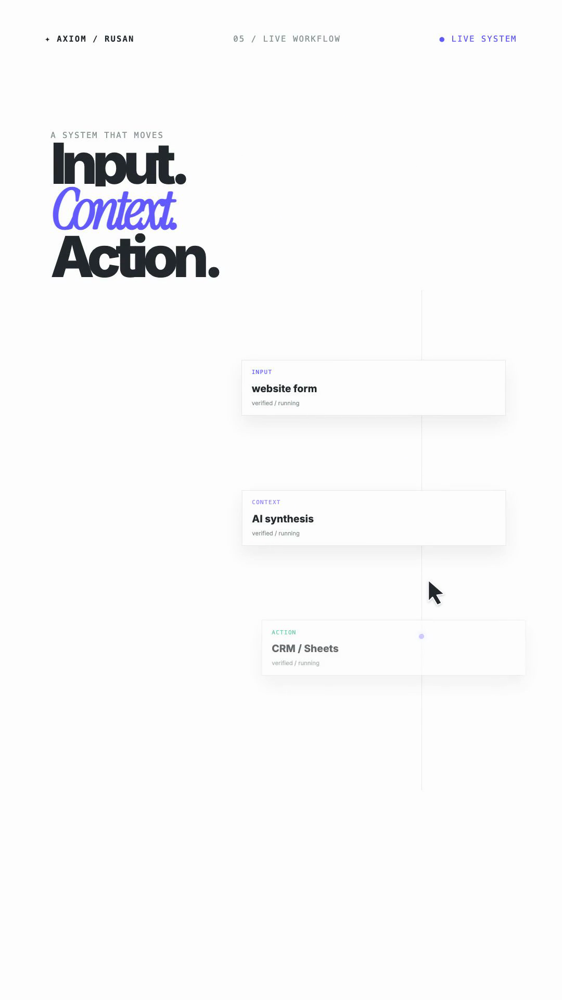
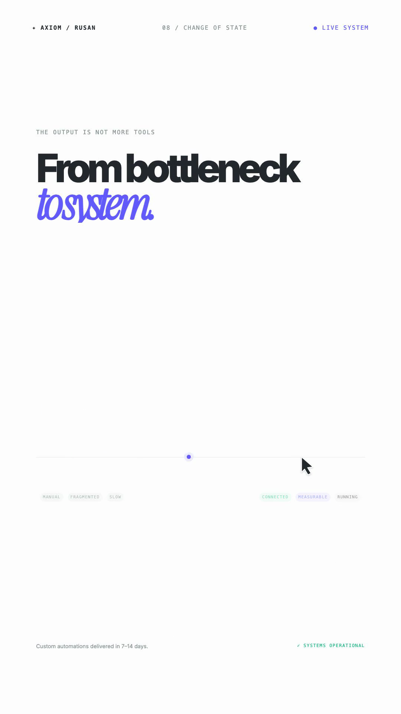
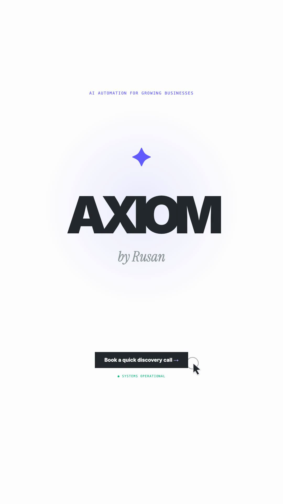

00.8 sec
Practical AI automations
Immediate type hit with a moving cursor, modeled after the reference’s fast opening copy build.
The provided reference established the edit language: white product space, rapid type builds, UI windows entering vertically, cursor-led clicks, and a dense sound bed. V3 applies that energy to Axiom’s actual operating story.

Immediate type hit with a moving cursor, modeled after the reference’s fast opening copy build.

Gmail, CRM / Sheets, Airtable / HubSpot, and Notion / Slack become moving UI inputs.

A living workflow state enters from below with a packet traveling through the pipeline.

Cards rise and fall on a vertical rail as the cursor tracks the system state.

The edit compresses the operational promise into one clean state change.

The final CTA is clicked, the status is operational, and the brand gets a readable hold.